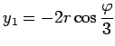

Inhalt Index DeskTop Bronstein

 Arithmetik Algebraische und transzendente Gleichungen Gleichungen 1. bis 4. Grades Gleichungen 3. Grades (kubische Gleichungen)
Arithmetik Algebraische und transzendente Gleichungen Gleichungen 1. bis 4. Grades Gleichungen 3. Grades (kubische Gleichungen)


Mit p aus Gleichung (1.155b) wird
| (1.160) |
gesetzt, wobei das Vorzeichen von r mit dem von q übereinstimmen muß. Daraufhin werden die Hilfsgröße  und mit ihrer Hilfe die Wurzeln y1, y2 und y3 in Abhängigkeit von den Vorzeichen von p und D = q2 + p3 aus der folgenden Tabelle bestimmt.
und mit ihrer Hilfe die Wurzeln y1, y2 und y3 in Abhängigkeit von den Vorzeichen von p und D = q2 + p3 aus der folgenden Tabelle bestimmt.
Lösung kubischer Gleichungen mit Hilfsgrößen
| p<0 | p>0 | |
| q2+p3>0 | ||
|  |
||
| Beispiel |